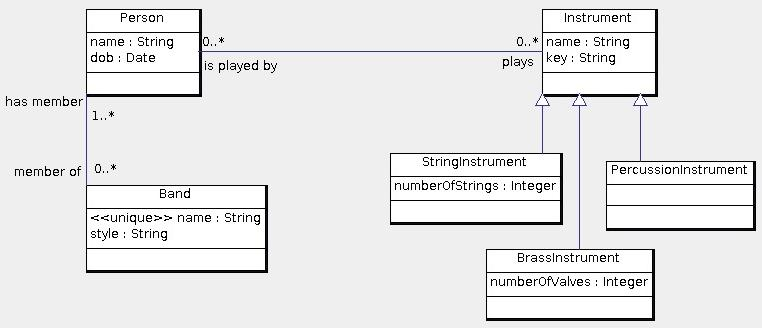

Here is a data model for bands, musicians and the musical instruments they play:

Note that in this data model, persons need not have unique names, and musical instruments may not have unique names. Nevertheless, the result of any query should have no duplicate entities. For example, in the second query if there is only one person named George there should not be more than one George in the result. However, if there are two persons named George and both satisfy the query, then both should appear in the result.
Use the following schema:
create table Person(
id int primary key,
dob date not null,
name varchar(255) not null
);
create table Band(
id int primary key,
name varchar(255) not null unique,
style varchar(255)
);
create table Instrument(
id int primary key,
name varchar(255) not null,
musicalKey varchar(255)
);
create table plays(
musician int references Person(id)
on update cascade on delete cascade,
instrument int references Instrument(id)
on update cascade on delete cascade,
primary key(musician, instrument)
);
create table memberOf(
musician int references Person(id)
on update cascade on delete cascade,
band varchar(255) references Band(name)
on update cascade on delete cascade,
primary key(musician, band)
);
create table StringInstrument(
id int primary key references Instrument(id)
on update cascade on delete cascade,
numberOfStrings int not null
);
create table BrassInstrument(
id int primary key references Instrument(id)
on update cascade on delete cascade,
numberOfValves int not null
);
create table PercussionInstrument(
id int primary key references Instrument(id)
on update cascade on delete cascade
);
Write the following queries in SQL:
© 2011 Ken Baclawski. All rights reserved. Redistribution and use in source and binary forms, with or without modification, are permitted provided that redistributions and uses retain this copyright notice.